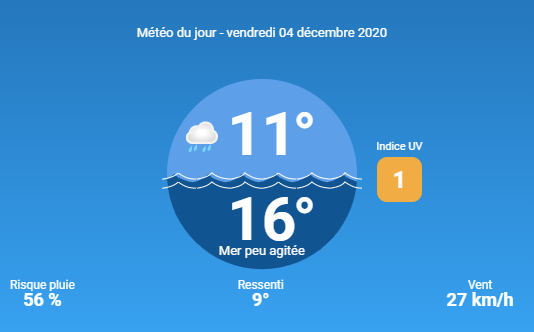

Plage de Pavalas Les Flots :
Palavas les Flots est un très bon spot durant l’été avec une eau avoisinant les 25°C. Durant l’hiver, il est préférable d’être bien équipé car les températures chutent. Il est préférable d’attendre les vents de direction Sud Est et Sud pour avoir des vagues optimales. Attention cependant aux touristes car la surpopulation peut entraîner certains dangers.
Meteo à la plage de Plavas Les Flots :
Informations sur les caracteristiques de la plage :
Pour la toxicité aujourd'hui elle est de : 0,4 UTa
Pour les fond marin aujourd'hui elle est de : 12 m
Pour la houle aujourd'hui elle vien du : SW
Pour la marée aujourd'hui elle est : haute à 15h23
Je suis peut-être au même endroit que les ours polaires